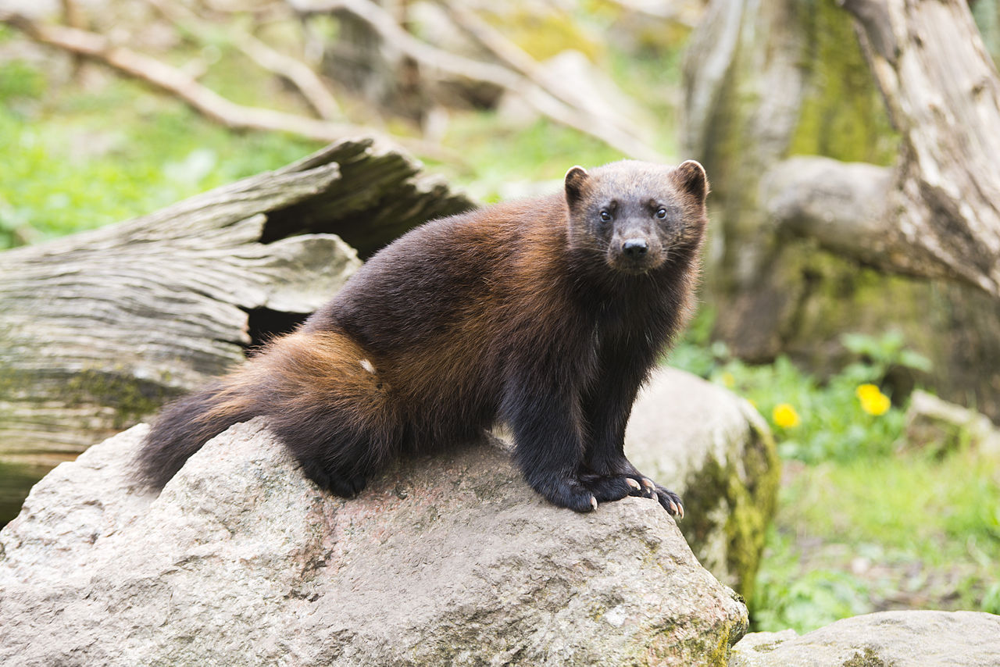

Chồn
Họ Chồn (danh pháp khoa học: Mustelidae) (từ tiếng Latinh: mustela nghĩa là chồn) là một họ các động vật có vú thuộc bộ Ăn thịt (Carnivora). Họ Mustelidae là một trong những họ đa dạng nhất của bộ Carnivora. Các thành viên quen thuộc trong họ này có thể kể đến là chồn, lửng, triết, rái cá.

Kích thước
Về kích thước, các loài trong họ Chồn dao động từ triết nâu (Mustela nivalis), chỉ lớn hơn chuột nhắt một chút, chúng có thể sống tại các vĩ độ cao cận kề Bắc cực; tới chồn gulô cân nặng tới 23 kg (50 pao) có thể tấn công cả tuần lộc, bẻ gãy xương dày như xương đùi của nai sừng tấm để hút tủy xương, cũng như dám tấn công cả gấu để tranh mồi; hay lửng mật, là loài có quan hệ cộng sinh duy nhất với loài chim gọi là chim hưởng mật; hay loài chồn tayra ở vùng nhiệt đới chủ yếu là ăn hoa quả, hoặc các loài rái cá với cuộc sống bơi lội. Các loài khác còn có chồn vizon, lửng, chồn putoa, chồn, chồn hôi châu Phi, chồn mactet.
Họ Mustelidae là một trong họ nhiều loài nhất của bộ Carnivora, cũng như là một trong các họ xuất hiện sớm nhất của bộ này. Các dạng động vật tương tự như chồn đã tồn tại từ khoảng 40 triệu năm trước và xảy ra gần như đồng thời với sự xuất hiện của động vật gặm nhấm.